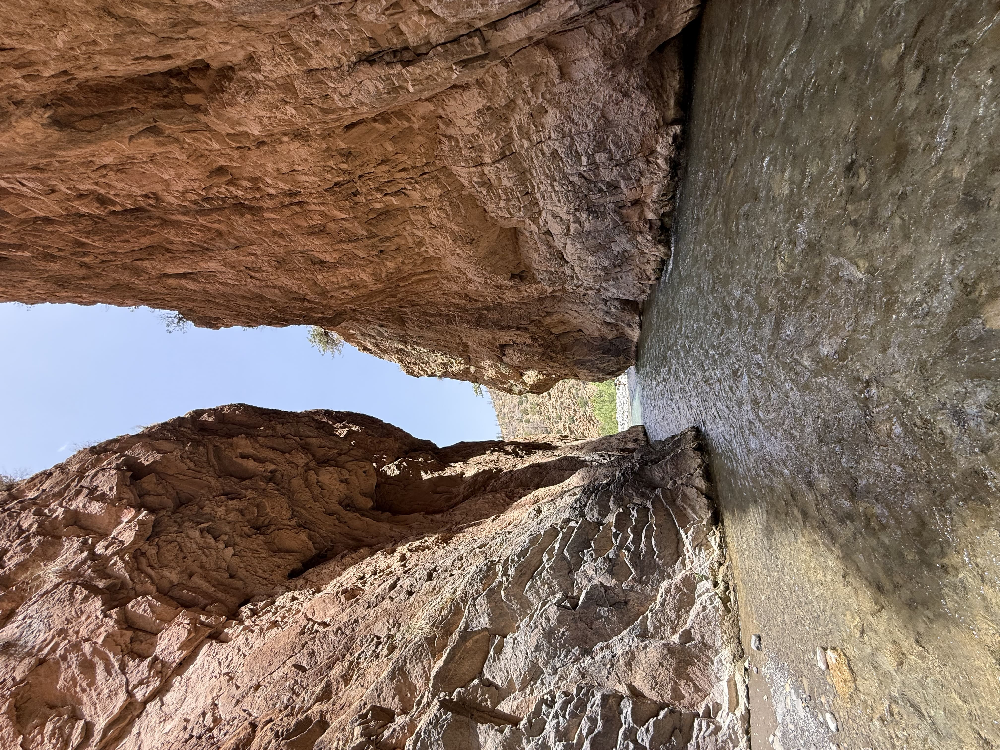
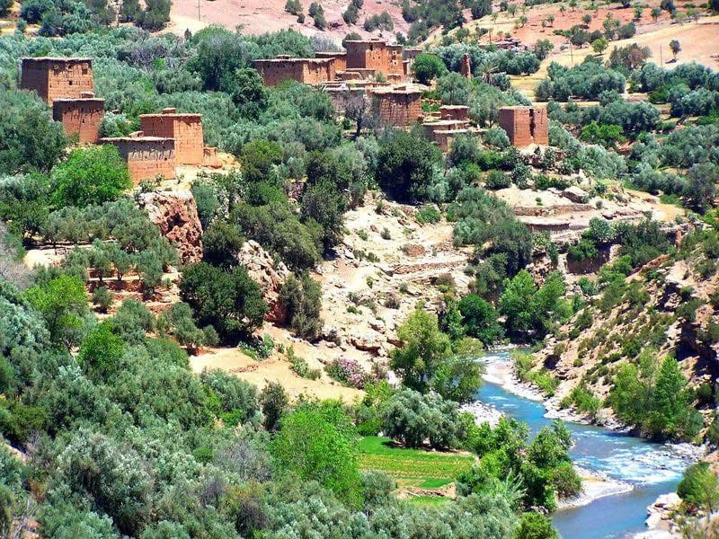

⛰️ Jebel Msfrane – "The Cathedral"
⛰️ Jebel Msfrane – "La Cathédrale"
Located in the Tilouguite commune in the Azilal province, Jebel Msfrane is one of the most remarkable natural landmarks in the region, rising to approximately 1868 meters above sea level. The summit is locally known as "The Cathedral" because its rocks resemble a giant church.
Situé dans la commune de Tilouguite dans la province d'Azilal, le Jebel Msfrane est l'un des sites naturels les plus remarquables de la région, s'élevant à environ 1868 mètres d'altitude. Le sommet est localement connu sous le nom de "La Cathédrale" car ses rochers ressemblent à une église géante.

💦 Wakoudene Waterfalls
💦 Cascades Wakoudene
One of the most beautiful natural surprises near Jebel Msfrane are the Wakoudene waterfalls, scattered between the villages of Imi N'Ouarg and Tamega. These waterfalls flow from the High Atlas mountains, offering a stunning natural spectacle.
L'une des plus belles surprises naturelles près du Jebel Msfrane sont les cascades de Wakoudene, dispersées entre les villages d'Imi N'Ouarg et Tamega. Ces cascades coulent des montagnes du Haut Atlas, offrant un spectacle naturel époustouflant.

🏞️ Ahansal River Gorges
🏞️ Gorges de l'Oued Ahansal
Formed over thousands of years by water flowing through the riverbed, the Ahansal gorges offer a rocky spectacle worth visiting. This place is characterized by high cliffs and steep slopes.
Formées sur des milliers d'années par l'écoulement de l'eau dans le lit de la rivière, les gorges d'Ahansal offrent un spectacle rocheux qui mérite d'être visité. Ce lieu est caractérisé par de hautes falaises et des pentes abruptes.

🏡 Tilouguite – Mountain Hub
🏡 Tilouguite – Centre Montagnard
Tilouguite is a mountain commune in the Azilal province, a true natural hub with its unique charm. Its territory is crossed by several watercourses and mountains like Msfrane and valleys like Ahansal.
Tilouguite est une commune montagnarde de la province d'Azilal, un véritable centre naturel avec son charme unique. Son territoire est traversé par plusieurs cours d'eau et montagnes comme Msfrane et des vallées comme Ahansal.

💧 Oued Ahansal – Lifeline of the Atlas
💧 Oued Ahansal – Artère de l'Atlas
Oued Ahansal is one of the most important mountain rivers in the High Atlas, flowing from Taghia and the surrounding mountainous areas, then passing through Zaouiat Ahansal which is known for its history and mountain nature.
L'Oued Ahansal est l'une des rivières de montagne les plus importantes du Haut Atlas, coulant de Taghia et des zones montagneuses environnantes, puis traversant Zaouiat Ahansal qui est connue pour son histoire et sa nature montagnarde.